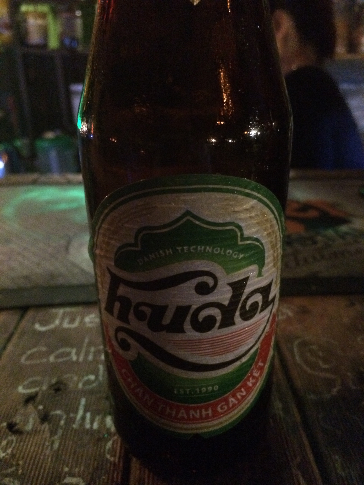
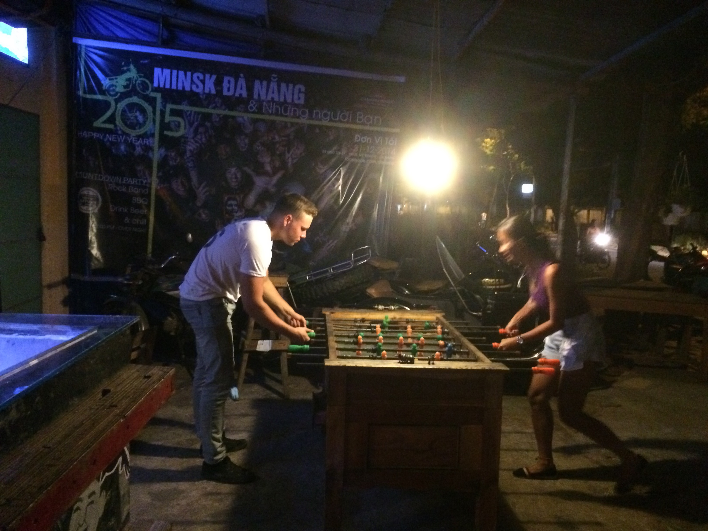
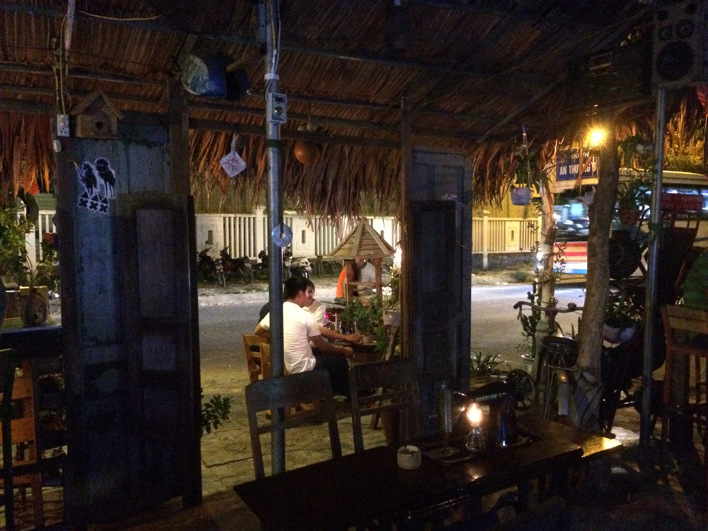
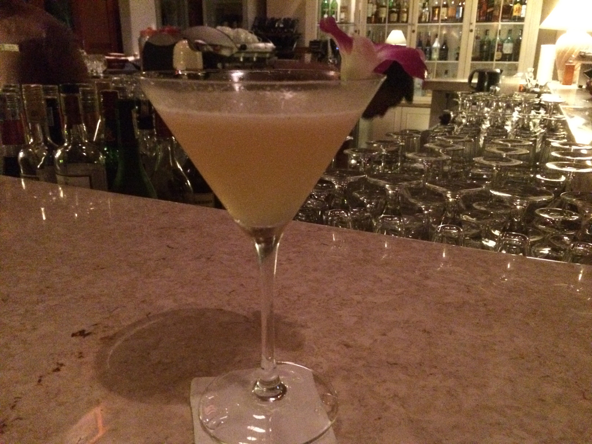
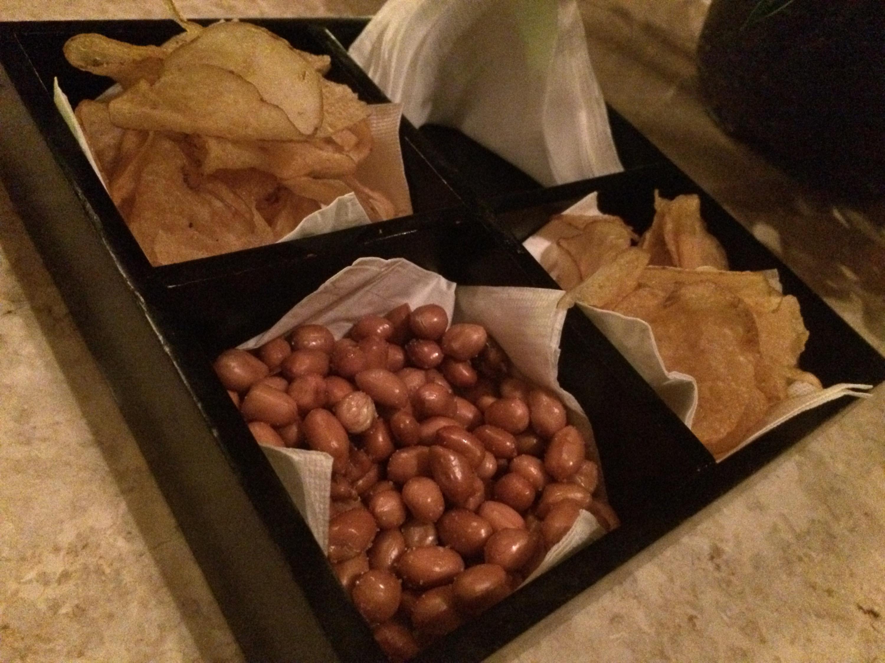

Absacker (aka nightcap)
June 1, 2015Since its my last evening in Da Nang, I’d like to introduce you to my nightcap traditions that I have elaborated the last 3 weeks.
When I drive back from town with my little motorbike I often (very often) stop at Minsk bar for a “last beer” (CZ guys know what it means if you say “jeden pivo”). It’s a very relaxed & layed back bar with great music (MP & Daniel, u would both love it – although no ska). absacker1



The beer is local. OKish, you mainly drink it because it’s local.
The other option is a nightcap at the bar of Furama hotel (where I stay). The bar is super stylish, so is the service and the drinks. Since I had the first Wiskey Sour here, I became addicted. Kind of alcoholic because one is never enough, sometimes it takes 3 to satisfy me. And then you’re done. At least I am.


Since tonight is my last night, I had both nightcaps. This will hurt tomorrow morning!